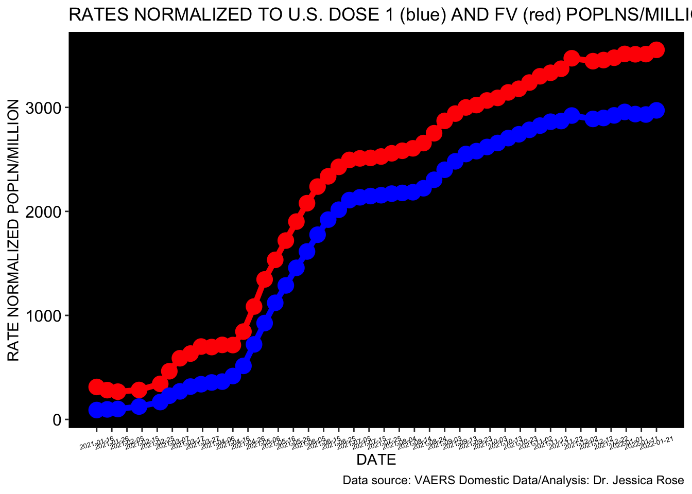
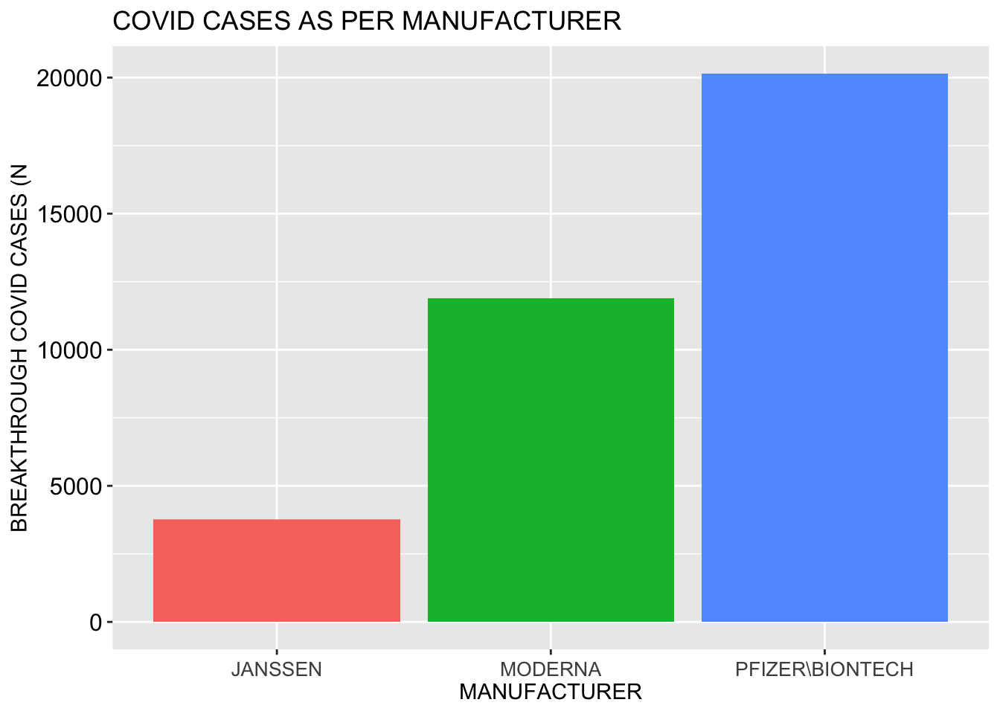
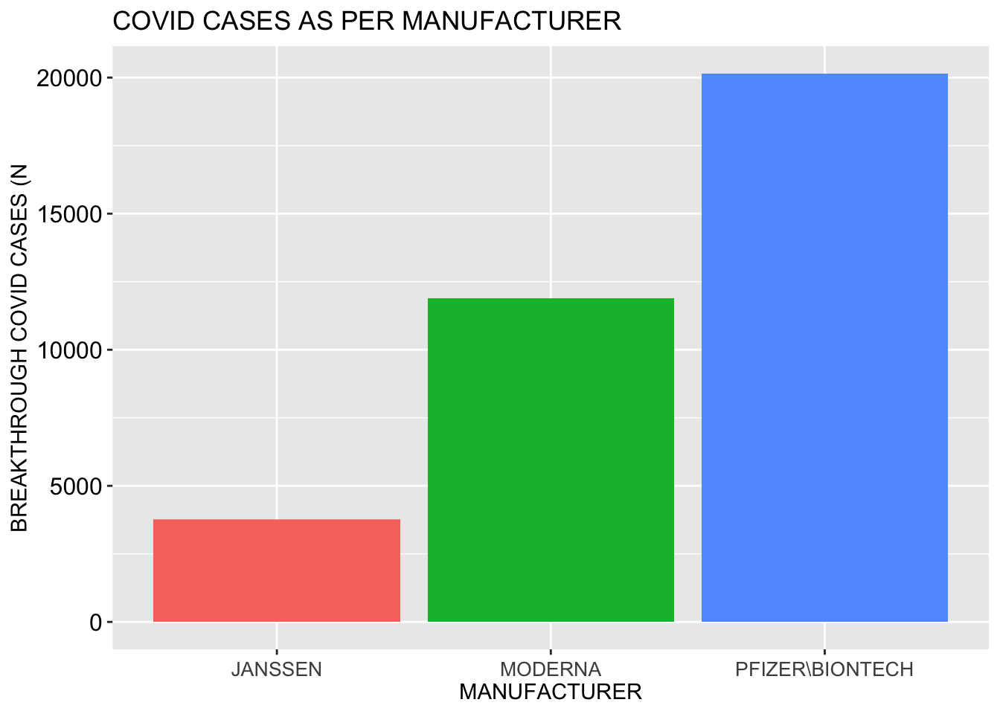
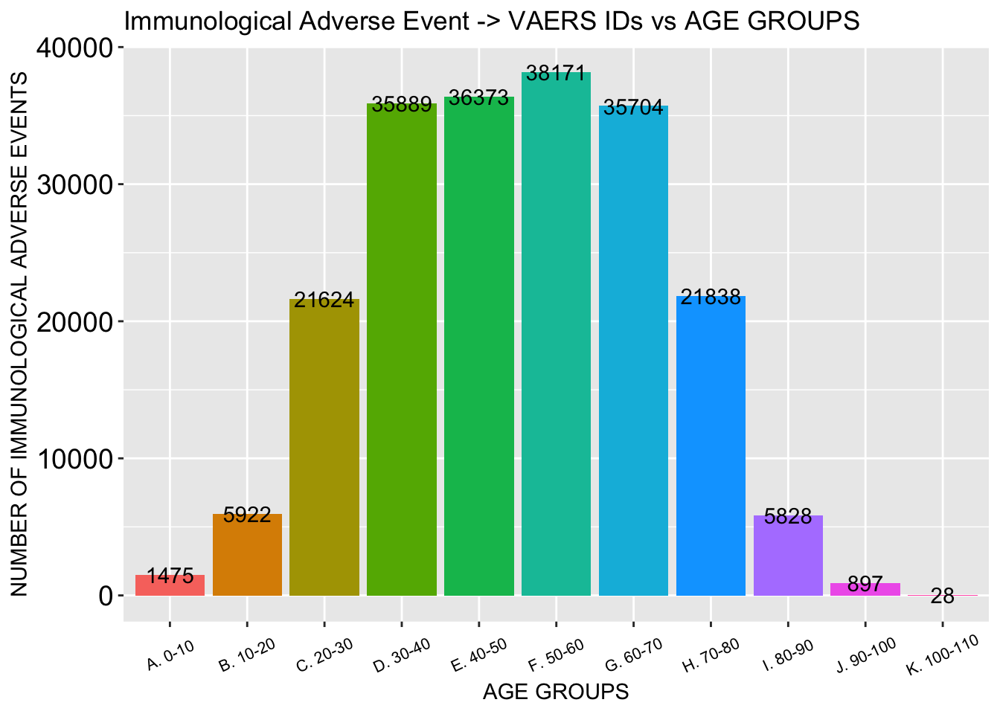
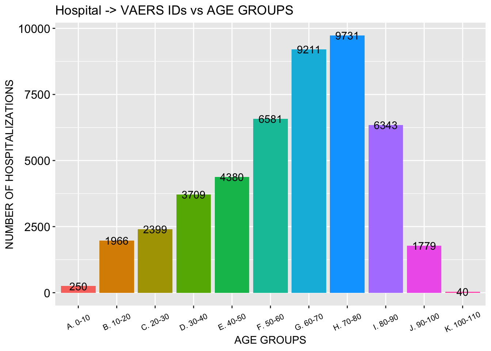

These are the VAERS ID counts for the past 30 years (absolute counts).
These are the VAERS ID counts for the past 30 years (absolute counts).This is an R Markdown sheet generated from the VAERS data. For the most part, only figures are shown. I decided to show figures pertaining to Death, Female Reproductive Issues, Breakthrough COVID-19 infections and Cardiovascular and Immunological adverse events. Also included is some stuff on kids and Myocarditis.
I start by coalescing the .csv files downloaded from the VAERS website: https://vaers.hhs.gov/data/datasets.html
This is the total number of adverse events in the context of COVID-19 products from Fizer, Modrna and JJ
## [1] 696446Percent of VAERS reports made by Females
## [1] 67.50961The following table is a summary of some variables in the context of COVID-19 product roll-out including changing fully-injected numbers (FV = Fully Vaccinated; SAE = Severe Adverse Events; ER = Emergency doctor visits; COVID = Breakthrough infections; FRI = Female Reproductive Issues)
## DATE IDs FV Dose_1 DEATH HOSPITAL ER SAE COVID
## 1 2021-01-16 1431 4582089 15840000 137 338 338 690 194
## 2 2021-01-23 2160 7664179 22360000 281 607 576 1207 254
## 3 2021-01-30 2946 11037313 29330000 456 953 847 1806 326
## 4 2021-02-13 5351 18895522 43170000 810 1747 1493 3221 619
## 5 2021-02-27 9286 27167910 55570000 984 2195 2187 4291 717
## 6 2021-03-05 14701 31720149 64490000 1162 2676 2980 5535 776
## 7 2021-03-12 20586 35000000 76320000 1419 3412 3855 7065 943
## 8 2021-03-19 27955 44145522 88480000 1561 3913 4763 8470 1057
## 9 2021-03-26 34121 48700000 100810000 1957 4387 5529 9796 1169
## 10 2021-04-02 40348 57980000 113530000 2149 4758 6329 10930 1267
## 11 2021-04-09 46163 64420000 126920000 2240 4906 6983 11724 1375
## 12 2021-04-16 57641 80610000 138040000 2500 5009 8084 13057 1404
## 13 2021-04-23 75370 89250000 146410000 3084 6215 10375 16478 1587
## 14 2021-04-30 108191 99670000 149980000 3442 8099 14553 22145 1930
## 15 2021-05-07 146622 108930000 158290000 3731 10648 19620 29024 2776
## 16 2021-05-14 182559 118990000 162850000 4015 11557 23641 33791 3317
## 17 2021-05-21 217716 126610000 168980000 4169 12625 27774 38650 3742
## 18 2021-05-28 252523 132770000 173240000 4372 14977 32547 44860 4285
## 19 2021-06-04 284041 136640000 175910000 4547 17520 37184 51068 4850
## 20 2021-06-11 316929 141580000 178450000 4700 19354 41937 57073 5497
## 21 2021-06-18 346967 148460000 180620000 4825 20571 45952 61917 6151
## 22 2021-06-25 368162 151620000 182600000 4931 21636 49511 66255 6927
## 23 2021-07-02 388900 155880000 184430000 5163 22612 52399 69941 8324
## 24 2021-07-09 397262 158290000 186010000 5375 23441 53789 71963 9139
## 25 2021-07-16 403335 160410000 187820000 5508 24087 55016 73645 9671
## 26 2021-07-23 409924 162170000 190170000 5604 24778 56357 75536 10199
## 27 2021-07-30 419295 163870000 193150000 6538 25634 57820 78186 10728
## 28 2021-08-06 427831 165640000 196470000 6639 26402 59061 80011 11381
## 29 2021-08-13 436175 167350000 199700000 6841 27160 60317 81937 12174
## 30 2021-08-20 450602 169590000 202730000 7018 27913 61754 84137 13117
## 31 2021-08-27 473722 172170000 205600000 7149 28651 63115 86209 14448
## 32 2021-09-03 499779 174120000 208210000 7344 29577 64893 88768 15979
## 33 2021-09-10 521667 177430000 210240000 7662 31041 66657 91839 17626
## 34 2021-09-17 541594 180570000 212270000 7859 32024 68692 94740 18917
## 35 2021-09-24 551836 182590000 213950000 8091 33172 70166 97147 19953
## 36 2021-10-01 565282 184340000 215810000 8342 34288 71831 99838 21042
## 37 2021-10-08 577804 186920000 217410000 8606 35484 73308 102373 22155
## 38 2021-10-15 591934 188280000 218850000 8879 36702 74997 105130 23358
## 39 2021-10-22 603738 189920000 220230000 9077 37769 76423 107542 24432
## 40 2021-10-29 618548 190990000 222160000 9315 38758 78060 110045 25393
## 41 2021-11-05 632823 191820000 224030000 9538 39625 79418 112192 26240
## 42 2021-11-12 642994 192940000 224660000 9721 40465 80584 114161 26975
## 43 2021-11-19 654539 194140000 228180000 9931 41370 81831 116275 27688
## 44 2021-11-26 675942 194670000 231370000 10309 43034 84061 120033 29272
## 45 2021-12-10 686032 199180000 237470000 10478 44126 85266 122221 30299
## 46 2021-12-17 696446 201580000 240320000 10651 45115 86502 124345 31127
## FRI COVID_deaths
## 1 4 38694
## 2 7 109630
## 3 8 131892
## 4 24 170988
## 5 34 198287
## 6 43 209042
## 7 67 218469
## 8 77 226014
## 9 88 232899
## 10 98 238917
## 11 105 245843
## 12 123 249289
## 13 165 253959
## 14 287 259751
## 15 436 263832
## 16 597 269044
## 17 774 272431
## 18 1067 277845
## 19 1421 280390
## 20 1967 282889
## 21 2460 285210
## 22 2940 287735
## 23 4145 289963
## 24 4934 290463
## 25 5723 292672
## 26 6130 294419
## 27 6538 295971
## 28 6639 299877
## 29 6841 302694
## 30 6904 307669
## 31 7105 316829
## 32 7405 326638
## 33 7722 339140
## 34 8303 354557
## 35 8646 365749
## 36 9153 374992
## 37 9467 389782
## 38 9716 406120
## 39 9915 415867
## 40 10194 426139
## 41 10588 434981
## 42 10841 443473
## 43 11096 451990
## 44 11465 461093
## 45 11676 477787
## 46 12040 490067This is the change in absolute number of VAERS IDs per year.
These are the VAERS ID counts for the past 30 years (absolute counts).
This is the cumulative number of VAERS IDs (N) so far for 2021 in the context of the COVID-19 products.

This is the number of VAERS IDs (N) so far for 2021 in the context of the COVID-19 products normalized to FULLY INJECTED population per million. 
These are the trajectories of cumulative data for the respective groups.
 These are the trajectories of normalized data for the respective groups (normalized to US FULLY INJECTED population per million).
These are the trajectories of normalized data for the respective groups (normalized to US FULLY INJECTED population per million).
 These are the trajectories of cumulative data for Deaths from VAERS and COVID deaths from OWID.
These are the trajectories of cumulative data for Deaths from VAERS and COVID deaths from OWID.

 This is the number of birth defects.
This is the number of birth defects.
## [1] 434This is the number of deaths and the percentage per total AEs.
## [1] 10651## [1] 1.529336These are the number of hospitalizations and emergency doctor visits.
## [1] 45115## [1] 86502These are the numbers of Severe Adverse Events (SAEs): Deaths, Hospital, ER, Life threatening, Disabling, Birth defect with the total SAE count and percentage of all AEs.
## [1] 10651## [1] 45115## [1] 86502## [1] 10918## [1] 11775## [1] 434## [1] 124345## [1] 17.85422## [1] 61230Histogram showing distribution of SAEs according to age group Actual VAERS SAE percentage compared to Standard VAERS SAE percentage
## Percent_SAE SAE PERC
## 1 Standard 105000 15
## 2 Actual 124345 18 Breakthrough COVID-19 case count AND PERCENTAGE of total ID count
Breakthrough COVID-19 case count AND PERCENTAGE of total ID count
## [1] 31127## [1] 4.469406
 

Female Reproductive Events count
## [1] 12040## [1] 1.728777Histogram showing distribution of Female Reproductive Issues by age group

##
## Chi-squared test for given probabilities
##
## data: FRI_CASES_VD_OD$OBSERVED
## X-squared = 29086, df = 50, p-value < 2.2e-16Cumulative FRI cases as per update - rates increasing.
 Heatmap showing Female Reproductive Issues wrt VAX DATE and ONSET DATE. Early April shows a clustering of intersecting points.
Heatmap showing Female Reproductive Issues wrt VAX DATE and ONSET DATE. Early April shows a clustering of intersecting points.

 Cardiac Events Count
Cardiac Events Count
## [1] "Arrhythmia"
## [2] "Myocarditis"
## [3] "Pericarditis"
## [4] "Endocarditis"
## [5] "Cardiac arrest"
## [6] "Chest pain"
## [7] "Myocardial infarction"
## [8] "Pericardial effusion"
## [9] "Aneurysm"
## [10] "Blood fibrinogen"
## [11] "Blood fibrinogen increased"
## [12] "Circulatory collapse"
## [13] "C-reactive protein decreased"
## [14] "C-reactive protein increased"
## [15] "Deep vein thrombosis"
## [16] "Dizziness"
## [17] "Fatigue"
## [18] "Fibrin D dimer increased"
## [19] "Irregular breathing"
## [20] "Ischaemia"
## [21] "Microembolism"
## [22] "Pallor"
## [23] "Palpitations"
## [24] "Platelet count decreased"
## [25] "Platelet count increased"
## [26] "Red blood cell count abnormal"
## [27] "Red blood cell count decreased"
## [28] "Red blood cell count increased"
## [29] "Red blood cell rouleaux formation present"
## [30] "Red blood cell schistocytes present"
## [31] "Syncope"
## [32] "Troponin"
## [33] "Troponin increased"
## [34] "Troponin I"
## [35] "Troponin I increased"
## [36] "Troponin T increased"
## [37] "Thrombosis"
## [38] "Echocardiogram abnormal"
## [39] "Dyspnoea"## [1] 204114 This is the number of kids aged 12-18 reported to VAERS with AEs, the percentage of the total AEs reported and a histogram showing age group distribution.
This is the number of kids aged 12-18 reported to VAERS with AEs, the percentage of the total AEs reported and a histogram showing age group distribution.
## [1] 30636
## [1] 29592## [1] 4.249001And this is a heatmap showing 1:1 correlation between onset of AE and injection date.

## # A tibble: 3,435 × 4
## # Groups: VAX_DATE, ONSET_DATE [3,435]
## VAX_DATE ONSET_DATE diff_in_days n
## <date> <date> <drtn> <int>
## 1 2021-05-14 2021-05-14 0 days 250
## 2 2021-05-19 2021-05-19 0 days 248
## 3 2021-05-15 2021-05-15 0 days 216
## 4 2021-05-13 2021-05-13 0 days 206
## 5 2021-04-07 2021-04-07 0 days 203
## 6 2021-05-18 2021-05-18 0 days 202
## 7 2021-04-06 2021-04-06 0 days 186
## 8 2021-05-21 2021-05-21 0 days 186
## 9 2021-04-09 2021-04-09 0 days 184
## 10 2021-04-08 2021-04-08 0 days 180
## # … with 3,425 more rowsHere we have the percentage of cardiac cases for kids aged 12-15 of the total youth population (12-18) in VAERS, the percentage of cardiac AEs that come from youths and the percentage of cardiac cases in kids aged 12-15 of the total cardiac AEs.
## [1] 14.17275## [1] 14.49778## [1] 2.054734Immunological Adverse Effects Count
## [1] "Anaphylactic reaction"
## [2] "Anaphylactic shock"
## [3] "Anaphylactoid reaction"
## [4] "Autoimmune demyelinating disease"
## [5] "Autoimmune disorder"
## [6] "Autoimmune thyroiditis"
## [7] "Chills"
## [8] "Cytokine storm"
## [9] "Drug reaction with eosinophilia and systemic symptoms"
## [10] "Dysgeusia"
## [11] "Dysphagia"
## [12] "Encephalomyelitis"
## [13] "Erythema"
## [14] "Febrile neutropenia"
## [15] "Fungal infection"
## [16] "Genital rash"
## [17] "Guillain-Barre syndrome"
## [18] "Haemorrhage subepidermal"
## [19] "Hepatitis"
## [20] "Hepatitis acute"
## [21] "Herpes simplex"
## [22] "Herpes simplex encephalitis"
## [23] "Herpes simplex reactivation"
## [24] "Herpes virus infection"
## [25] "Herpes zoster"
## [26] "Herpes zoster cutaneous disseminated"
## [27] "Hyperpyrexia"
## [28] "Immediate post-injection reaction"
## [29] "Immune thrombocytopenia"
## [30] "Inflammation"
## [31] "Leukopenia"
## [32] "Lymphadenitis"
## [33] "Lymphadenopathy"
## [34] "Malaise"
## [35] "May-Thurner syndrome"
## [36] "Meningitis"
## [37] "Meningitis aseptic"
## [38] "Meningitis viral"
## [39] "Myelitis"
## [40] "Multiple sclerosis relapse"
## [41] "Multiple allergies"
## [42] "Myelitis transverse"
## [43] "Neuritis"
## [44] "Noninfective encephalitis"
## [45] "Ophthalmic herpes simplex"
## [46] "Oral herpes"
## [47] "Oral viral infection"
## [48] "Pancreatitis"
## [49] "Pancreatitis acute"
## [50] "Parkinsonism"
## [51] "Peptostreptococcus infection"
## [52] "Periarthritis"
## [53] "Pneumonia viral"
## [54] "Pruritus"
## [55] "Rash"
## [56] "Rash erythematous"
## [57] "Rash macular"
## [58] "Rash maculo-papular"
## [59] "Rash morbilliform"
## [60] "Rash papular"
## [61] "Rash pruritic"
## [62] "Rash pustular"
## [63] "Rash vesicular"
## [64] "Reaction to excipient"
## [65] "Rheumatoid arthritis"
## [66] "Butterfly rash"
## [67] "Necrosis"
## [68] "Stevens-Johnson syndrome"
## [69] "Systemic lupus erythematosus"
## [70] "Systemic lupus erythematosus rash"
## [71] "Systemic scleroderma"
## [72] "Thrombophlebitis"
## [73] "Type III immune complex mediated reaction"
## [74] "Urticaria"
## [75] "Varicella zoster virus infection"
## [76] "Vestibular neuronitis"
## [77] "Viral cardiomyopathy"
## [78] "Viral infection"
## [79] "Viral pericarditis"
## [80] "Viral rash"
## [81] "Systemic scleroderma"Here we have the total AE count for immunological adverse events as per the list above. This is a very short list as compared with the total number of immunological AEs. It is merely a representation.
## [1] 209420 This is a histogram showing death distribution according to age group. We also have a time series plot showing clustering of data around day 1 following injection. And! We have a heatmap confirming strong correlation between injection date and death date. R=1 -> perfect correlation (look for red on diagonal).
## # A tibble: 51 × 6
## diff_in_days n OBSERVED Percentage_OBSERVED EXPECTED Percentage_EXPECTED
## <drtn> <int> <int> <dbl> <int> <dbl>
## 1 1 days 631 631 11.7 105 1.25
## 2 2 days 407 407 7.56 105 1.25
## 3 0 days 307 307 5.70 105 1.25
## 4 3 days 305 305 5.67 105 1.25
## 5 4 days 242 242 4.50 105 1.25
## 6 5 days 217 217 4.03 105 1.25
## 7 7 days 193 193 3.59 105 1.25
## 8 6 days 166 166 3.08 105 1.25
## 9 9 days 154 154 2.86 105 1.25
## 10 8 days 129 129 2.40 105 1.25
## # … with 41 more rowsHere is a histogram showing death distribution by age group.
Here is a plot showing clustering of reports around 0 and 1 in the context of death.

## # A tibble: 5,830 × 5
## # Groups: DIED, DATEDIED, VAX_DATE [5,830]
## DIED DATEDIED VAX_DATE diff_in_days n
## <chr> <date> <date> <drtn> <int>
## 1 Y 2021-01-02 2021-01-02 0 days 1
## 2 Y 2021-01-03 2021-01-02 1 days 1
## 3 Y 2021-01-03 2021-01-03 0 days 1
## 4 Y 2021-01-04 2021-01-02 2 days 4
## 5 Y 2021-01-04 2021-01-03 1 days 1
## 6 Y 2021-01-04 2021-01-04 0 days 4
## 7 Y 2021-01-05 2021-01-02 3 days 1
## 8 Y 2021-01-05 2021-01-03 2 days 2
## 9 Y 2021-01-05 2021-01-04 1 days 2
## 10 Y 2021-01-05 2021-01-05 0 days 4
## # … with 5,820 more rows This is a histogram showing hospitalization distribution according to age group. We also have a time series plot showing clustering of data around day 1 following injection. And! We have a heatmap confirming strong correlation between injection date and hospitalization date. R=1 -> perfect correlation (look for red on diagonal).
This is a histogram showing hospitalization distribution according to age group. We also have a time series plot showing clustering of data around day 1 following injection. And! We have a heatmap confirming strong correlation between injection date and hospitalization date. R=1 -> perfect correlation (look for red on diagonal).


 This is a histogram showing ER distribution according to age group. We also have a time series plot showing clustering of data around day 1 following injection. And! We have a heatmap confirming strong correlation between injection date and ER date. R=1 -> perfect correlation (look for red on diagonal).
This is a histogram showing ER distribution according to age group. We also have a time series plot showing clustering of data around day 1 following injection. And! We have a heatmap confirming strong correlation between injection date and ER date. R=1 -> perfect correlation (look for red on diagonal).


And hey! What would this analysis be without myocarditis? This is the count of myocarditis cases and the percentage of the total count for cardiac cases and for the total AE count.
## [1] 1123## [1] 0.5501827## [1] 0.1612472And this plot shows age versus dose data for myocarditis cases using only the MedDRA code ‘myocarditis’. Notice how many young people. Hmm what’s that now? Dose 2 is causing moycarditis in young males? Hmm

 Are particular VAX LOTS being distributed to partuclar states? And are they more highly associated with death? Myocarditis?
Are particular VAX LOTS being distributed to partuclar states? And are they more highly associated with death? Myocarditis?